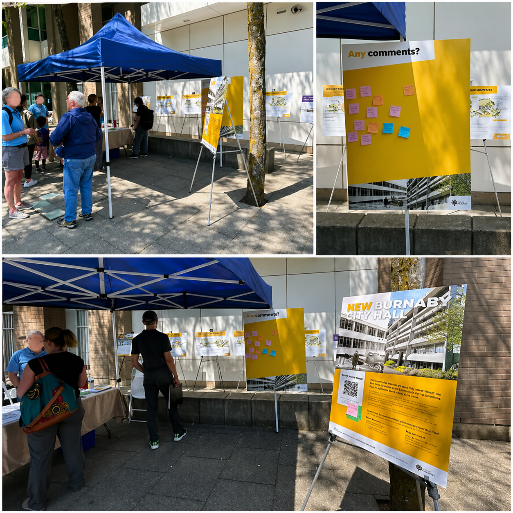
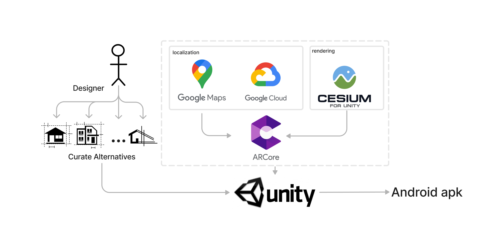
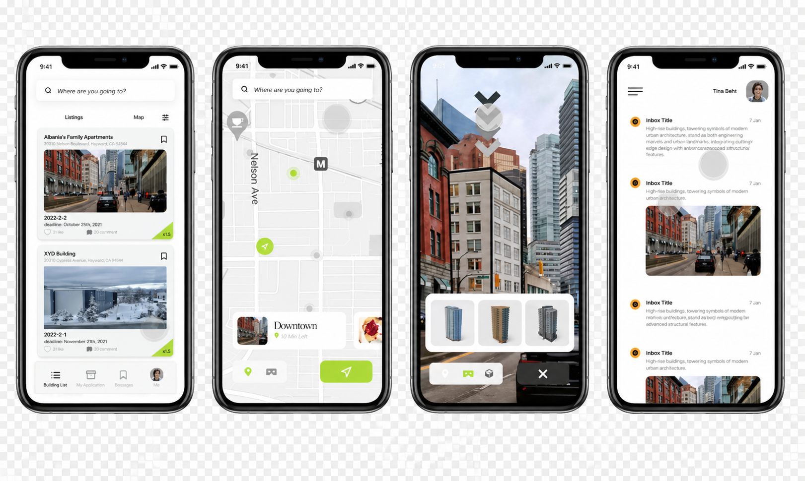
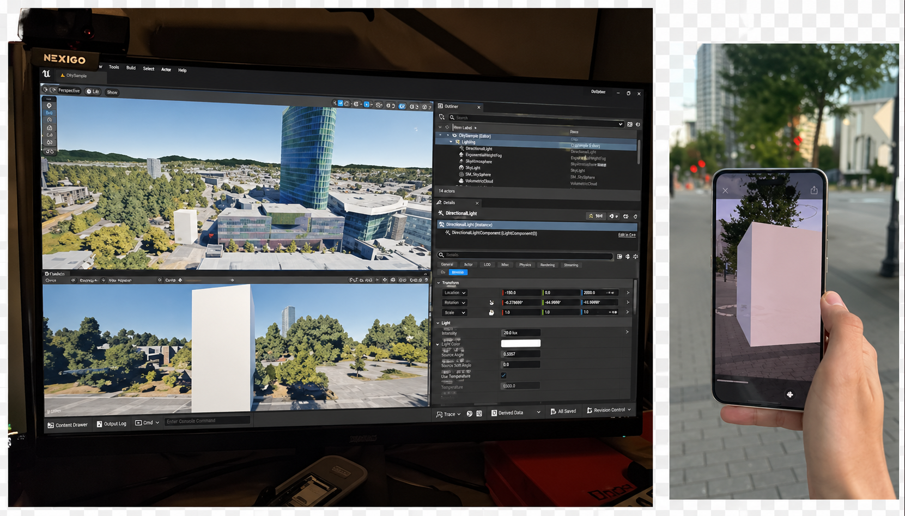

The three sculpture alternatives evaluated through D-ARE at Surrey Central, BC — helix-cone, sliced-torus, and multi-curve.
Bringing citizens into the design conversation, in the real world, in real time. A location-based AR app that lets everyday people see, explore, and give feedback on proposed public sculptures directly in their actual environment.
The three sculpture alternatives evaluated through D-ARE at Surrey Central, BC — helix-cone, sliced-torus, and multi-curve.
When designers propose changes to public spaces, the people who actually live and work there rarely get a genuine say. Traditional engagement methods like town halls, printed boards, and surveys are abstract, hard to visualize, and often inaccessible to non-experts.

A traditional public engagement session in Burnaby, BC — the type of process D-ARE was designed to improve.
Designers speak in technical language. Citizens see flat renders on paper. Neither side can bridge that gap effectively, and the result is built environments that do not truly serve the communities they are meant for.
D-ARE in action — a citizen viewing a sculpture design proposal through the AR interface at Surrey Central.
D-ARE is a location-based mobile AR app that places 3D design proposals directly in their real-world context. Users walk up to the site, point their phone, and interact with the designs as if they were already built, then share their feedback on the spot.

The D-ARE system — designers curate alternatives on the server side, citizens interact through GPS and camera on their phones, selecting, reviewing, comparing, and joining discussion.
See all 3 design proposals placed in the actual location, at real scale.
Walk around, zoom in, change angles and explore from any perspective.
Access material, cost, and sustainability data per design in a separate tab.
Compare all proposals at once across visual and data dimensions.
Submit opinions per proposal and see what other citizens think.
GPS guides users to the exact spot where AR content is anchored.
The app guides citizens through a clear journey: find the site on the map, view the proposals in AR, explore performance data, compare alternatives, and submit feedback.

The listing and navigation screens — citizens find the proposal site through a social-media-style feed and GPS map.

The four core screens of D-ARE: AR view with 3D model, performance data tab, side-by-side comparison, and discussion thread.
I led this project end-to-end as part of my master's thesis at Simon Fraser University, working across all phases of the design and research cycle.
Literature review, user study design, 20-participant usability testing, and post-task surveys.
Whiteboard ideation, lo-fi prototyping in Figma, and AR interaction design.
Built the Android app using Unity and ARCore, integrated Google Maps, Google Cloud, and Cesium.
Evaluated 4 existing public engagement tools to identify gaps and design opportunities for a better solution.
Mapped use cases, user flows, and interaction patterns. Explored how to make complex design data accessible to non-expert users.
Translated sketches into structured wireframes covering all 5 key screens: listing, AR view, data, comparison, and feedback.
Built the Android prototype integrating GPS, camera, 3D model rendering via Cesium, and Google Cloud for model storage.
Deployed with 20 participants on-site. Collected task completion data, interaction patterns, and post-task survey responses.

Early ideation sessions — mapping use cases, interaction flows, and design concepts.

From lo-fi wireframes in Figma to building and testing the prototype in Unity and ARCore.

The technical stack — Google Maps and Google Cloud for localization, Cesium for 3D rendering, ARCore for tracking, all assembled in Unity and deployed as an Android APK.
The user study with 20 participants confirmed that placing design proposals in their real-world AR context significantly lowered the barrier for non-expert citizens to understand and evaluate complex design decisions.
Participants rated the app as both engaging and easy to use. Seeing proposals in-situ from multiple perspectives helped them better understand the visual and spatial qualities of each design, and made the comparison and decision process feel much more natural. The research was accepted and published in three international peer-reviewed conferences.